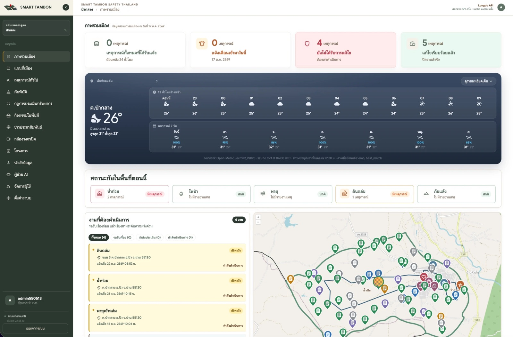
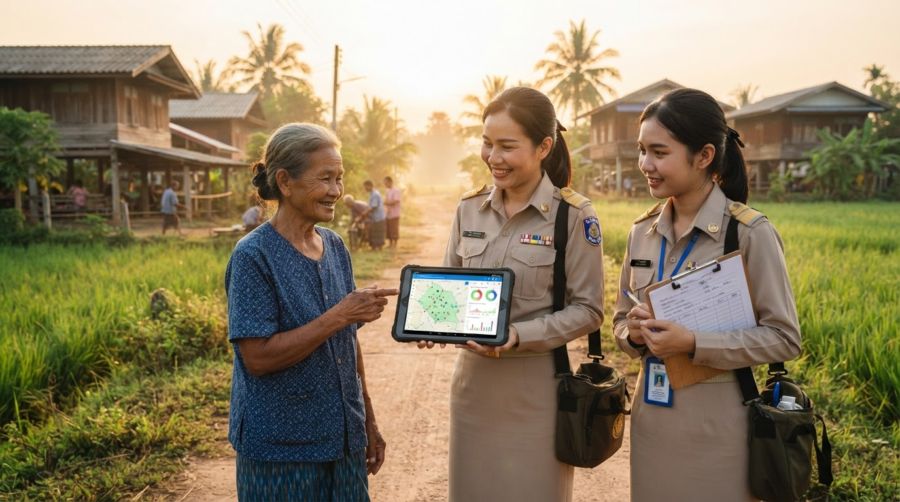
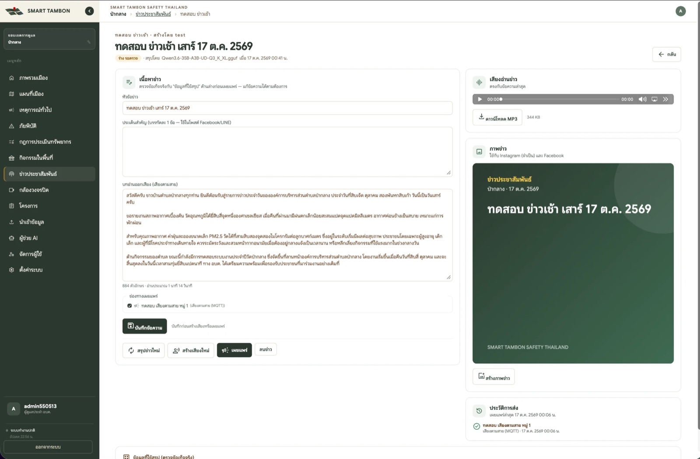
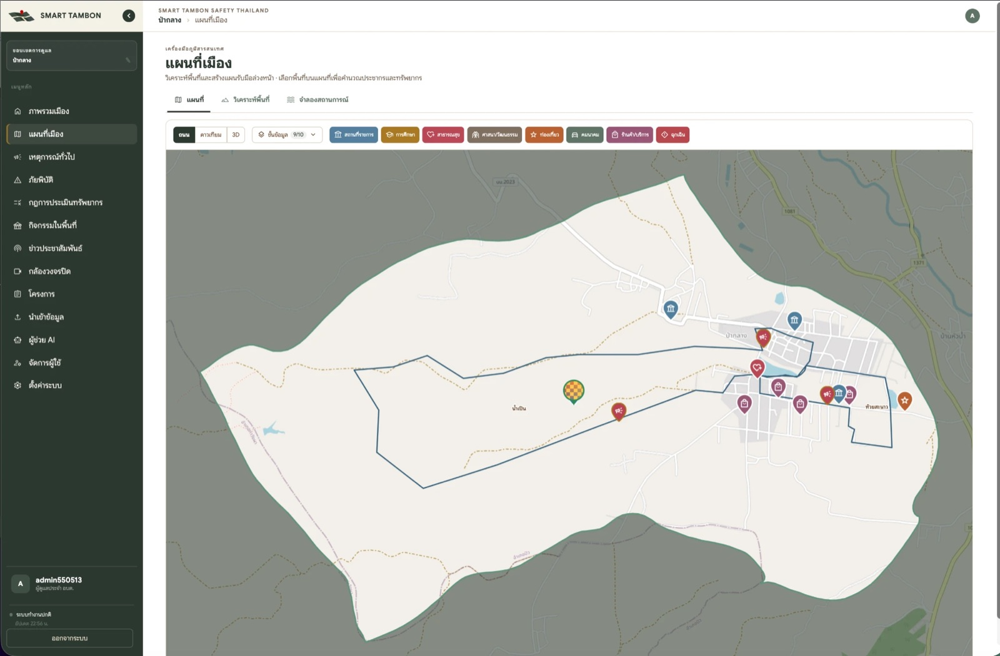
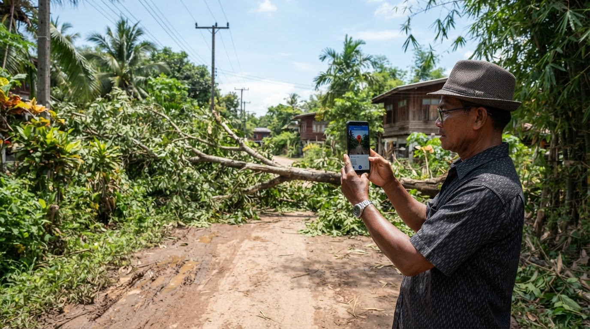

ระบบบริหารจัดการความปลอดภัย สำหรับ อบต.Safety management for sub-district administrations
ข้อมูลตำบล เก็บครั้งเดียว ใช้ได้ทุกกองCollect tambon data once. Every department uses it.
TambonX รวมประชากร ทีมงาน ทรัพยากร โครงการ เหตุการณ์ และข้อมูลอากาศ ฝุ่น น้ำ ไฟป่า ไว้บนแผนที่ตำบลจริง ผู้บริหารเห็นภาพรวมในหน้าเดียว เจ้าหน้าที่ทำงานต่อได้ทันทีTambonX puts population, teams, equipment, projects, incidents, and live weather, air, water and wildfire data on a map of the real sub-district boundary. Executives see the whole picture on one screen, and staff act on it right away.


ปัญหาที่ อบต. เจอทุกวันThe everyday problem
ข้อมูลมีอยู่แล้ว แต่กระจาย จนสรุปไม่ทันThe data exists, but it is too scattered to summarise in time
- ประชากร ครัวเรือน ครุภัณฑ์ อยู่คนละไฟล์ คนละกอง ไม่รู้ว่าฉบับไหนล่าสุดPopulation, households and equipment sit in different files in different departments, and nobody knows which copy is current.
- เรื่องร้องเรียนมาทางโทรศัพท์ ไลน์ กระดาษ ต้องนับยอดใหม่ทุกเดือนComplaints arrive by phone, LINE and paper, so every monthly count starts from scratch.
- เกิดน้ำท่วม ตอบไม่ได้ทันทีว่ากระทบกี่ครัวเรือน และอุปกรณ์พอหรือไม่When a flood hits, no one can say at once how many households are affected or whether there is enough equipment.
- TambonX ผูกทุกข้อมูลกับขอบเขตตำบลและหมู่บ้านจริง ทุกการแก้ไขมีรุ่นและประวัติ ย้อนกลับได้TambonX ties every record to the real sub-district and village boundaries. Every change is versioned, logged and reversible.
ความสามารถFeatures
ข้อมูลชุดเดียว แต่ละกองได้สถิติของตัวเองOne dataset, and each department gets its own statistics
งานป้องกันและบรรเทาภัยDisaster prevention
รับแจ้ง มอบทีม ติดตามถึงปิดงาน วาดพื้นที่บนแผนที่แล้วได้ประชากร ครัวเรือน และทรัพยากรที่ต้องใช้เทียบกับที่มีTake reports, assign a team and track each case to closure. Draw an area on the map to get the population, households and resources needed against what is on hand.
สาธารณสุขและสิ่งแวดล้อมPublic health and environment
ค่าฝุ่น PM2.5 รายตำบล จุดความร้อนจาก NASA ย้อนหลัง 24 ชั่วโมงถึง 7 วัน และพยากรณ์อากาศ 7 วันPM2.5 per sub-district, NASA fire hotspots for the last 24 hours to 7 days, and a 7-day weather forecast.
กองช่าง กองคลัง งานแผนEngineering, finance and planning
งบประมาณต่อปีงบประมาณ แยกกลุ่ม แหล่งงบ ผลการอนุมัติ ความคืบหน้าเป็นร้อยละ และตำแหน่งโครงการบนแผนที่Budget per fiscal year by project group, funding source and approval status, progress in percent, and each project's location on the map.
สำนักปลัดOffice of the Chief Administrator
นำเข้าจาก Excel เดิมผ่านตัวช่วย 6 ขั้น ประชากรชาย หญิง ครัวเรือน รายหมู่บ้าน ปฏิทินกิจกรรมพร้อมจำนวนผู้ร่วมงานImport existing Excel files through a 6-step wizard. Population by sex and households for each village, plus an events calendar with expected attendance.
งานพัสดุSupplies
สต็อกคงเหลือ รับเข้า เบิกออก แจ้งเตือนใกล้หมด ตัดสต็อกอัตโนมัติเมื่อทีมบันทึกการใช้ในเหตุการณ์Stock on hand, receipts and issues, and low-stock alerts. Stock is deducted automatically when a team logs what it used on an incident.
ผู้บริหารExecutives
ถามเป็นภาษาไทย ได้ตาราง กราฟ และไฟล์ CSV ทันที AI เห็นเฉพาะข้อมูลในเขตของ อบต. และไม่เห็นชื่อผู้แจ้งเหตุAsk in plain Thai and get tables, charts and CSV files at once. The AI sees only data inside your sub-district and never sees who reported an incident.
ใหม่ · ข่าวประชาสัมพันธ์และเสียงตามสายNew · Public news and village PA
AI เขียนข่าว อ่านออกเสียง ส่งถึงลำโพงทุกหมู่บ้านAI writes the news, reads it aloud and sends it to every village loudspeaker
- ตั้งรายการข่าวครั้งเดียวSet up a programme onceเช่น ข่าวเช้า 07:00 ทุกวัน เลือกข้อมูลที่จะสรุป: อากาศ ฝุ่น น้ำ ไฟป่า กิจกรรม เหตุการณ์ โครงการFor example a 07:00 morning bulletin every day. Choose what to summarise: weather, air, water, wildfires, events, incidents, projects.
- AI สรุปจากข้อมูลจริงAI drafts from real dataข่าวเป็นร่างรอตรวจ พร้อมข้อมูลที่ใช้สรุปให้เจ้าหน้าที่เทียบข้อเท็จจริงEach bulletin starts as a draft for review, shown next to the data it was written from so staff can check the facts.
- สร้างเสียงอ่านและภาพข่าวGenerate voice and imageได้ไฟล์ MP3 และภาพสำหรับโซเชียลGet an MP3 read-out and an image for social media.
- กดเผยแพร่ครั้งเดียวPublish with one clickส่งพร้อมกันทุกช่องทางที่เลือกIt goes out to every selected channel at once.เสียงตามสาย (MQTT)Village PA (MQTT)FacebookInstagramLINE OATelegramSignalWebhook

หน้าจอระบบScreens
ดูหน้าจอจริงทีละเมนูBrowse the real screens, menu by menu

ภาพหน้าจอจากระบบจริง ใช้ข้อมูลตัวอย่างของ อบต.ป่ากลาง อ.ปัว จ.น่าน (รหัสตำบลScreenshots from the live system with sample data for Pa Klang SAO, Pua District, Nan (sub-district code 550513)
ประชาชนแจ้งเหตุResident reporting
เปิดลิงก์ ถ่ายรูป ปักตำแหน่ง ส่งOpen the link, take a photo, drop a pin, send
ไม่ต้องติดตั้งแอปหรือล็อกอิน แต่ละแหล่ง เช่น ผู้ใหญ่บ้าน อสม. รพ.สต. มีลิงก์ของตัวเอง ระบบรับเฉพาะตำแหน่งในเขต อบต. และเด้งแจ้งเตือนบนจอเจ้าหน้าที่ทันทีNo app and no login. Each source, such as village heads, health volunteers or the local health centre, gets its own link. Only locations inside the sub-district are accepted, and staff get an on-screen alert immediately.
ทุกเรื่องได้เลขอ้างอิง เช่นEvery case gets a reference number such as INC-2569-C3FF16 และประวัติการดำเนินงานครบทุกขั้นand a complete action history.

ข้อมูลภาครัฐที่ดึงเข้ามาเองGovernment data, pulled in automatically
ไม่ต้องเปิดหลายเว็บเพื่อดูฝุ่น น้ำ และไฟป่าNo more checking several websites for air, water and wildfire data
เริ่มใช้งานGet started
นำร่องได้จากข้อมูลที่ อบต. มีอยู่แล้วPilot with the data your office already has
- ขั้นที่ 1Step 1
ตั้งค่าพื้นที่และบัญชีSet up area and accounts
ขอบเขต อบต. ผู้ดูแล และเจ้าหน้าที่ทุกกองSub-district boundary, administrators and staff in every department
- ขั้นที่ 2Step 2
นำเข้าข้อมูลพื้นฐานImport base data
ประชากร หมู่บ้าน ทีม ทรัพยากร จาก Excel เดิมPopulation, villages, teams and equipment from existing Excel files
- ขั้นที่ 3Step 3
อบรมและเปิดรับแจ้งเหตุTrain and open reporting
แชร์ลิงก์ให้ผู้ใหญ่บ้าน อสม. และ รพ.สต.Share report links with village heads, health volunteers and the health centre
- ขั้นที่ 4Step 4
ใช้งานจริงGo live
โครงการปีงบปัจจุบัน ข่าวเสียงตามสาย และรายงาน AI รายเดือนThis fiscal year's projects, village PA bulletins and monthly AI reports
ติดต่อContact
นัดสาธิตระบบกับข้อมูลตำบลของคุณBook a demo with your own sub-district data
กรอกข้อมูล แล้วทีมงานจะติดต่อกลับเพื่อนัดวันสาธิต หรือติดต่อโดยตรงตามช่องทางด้านล่างFill in the form and our team will call you back to schedule a demo, or reach us directly below.